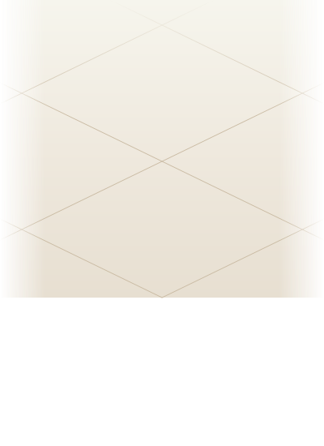
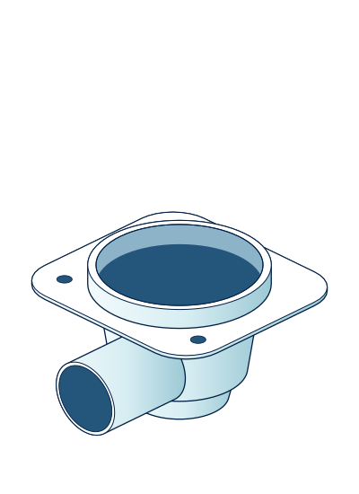
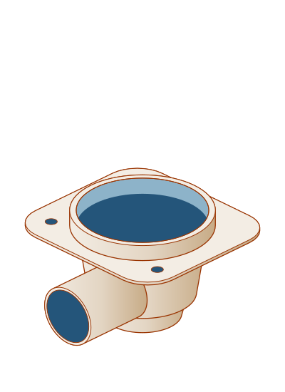
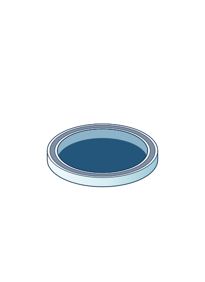
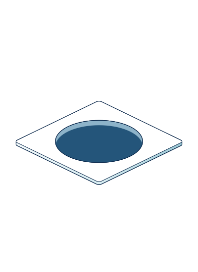
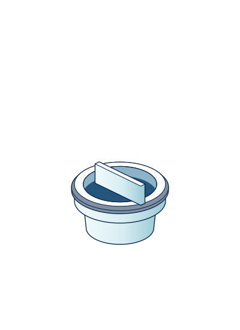
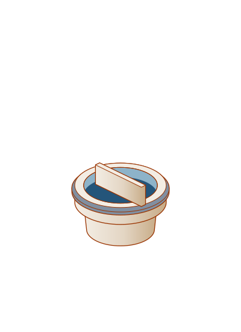
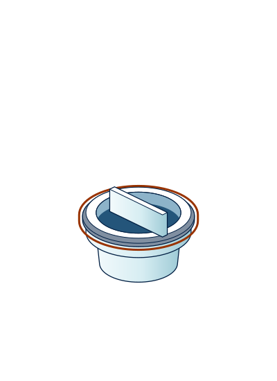
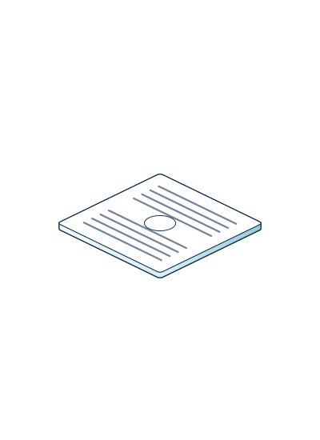
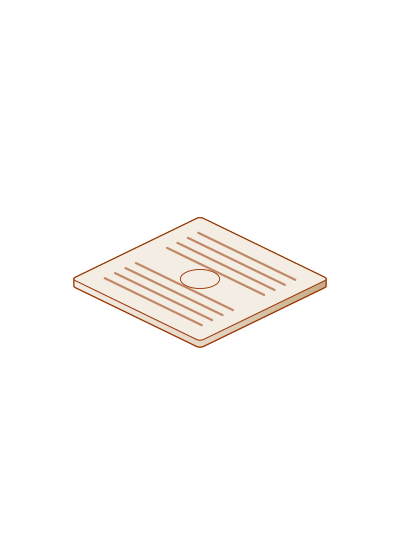

Lattiakaivon puhdistus
Puhdista kaivo, jos vesi valuu hitaasti tai kaivosta tulee hajua, ja ainakin kerran vuodessa. Vaihe kerrallaan, kaikki lattian tasolta.
Haju jatkuu puhdistuksen jälkeen?









{{ laskuri }}
{{ tila }}
-
{{ v.otsikko }}
{{ v.tagi }}
{{ v.teksti }}
Ei kahvaa? {{ v.alt }}
Haju jatkuu?
Vesilukko ei ole kunnolla paikallaan, tiiviste on vioittunut tai kaivo on yhä likainen. Paina vesilukko alas asti tai vaihda se uuteen.
Löydä varaosa jälleenmyyjältäKannen puhdistus
Puhdista kansi kummaltakin puolelta ja irrota hiukset. Teräskannesta pinttynyt lika lähtee kevyesti hankaamalla, kalkki kevyesti happamalla puhdistusaineella.
Tekninen asiakaspalvelu 020 746 4400